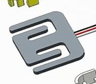

From the CAD file
Strain gauge — top view
The plan view is taken straight from StrainGauge.step — all 28 profile segments read out of the AP242 file and redrawn, in the orientation the CAD itself uses. Fig. 03 adds the half-bridge gauge placement for the load case: outer arms fixed, load into the page at the web tips.

ViewTop (plan)
ProjectionOrthographic
Size30 × 25 × 2.5
SourceStrainGauge.step
Notes
- Two hairpin slots — each opens at the bottom edge, runs the length of the plate, turns across the top and returns to a closed end. They mirror each other about the vertical centre line, leaving a solid block at the closed end.
- Everything is 3 mm — slot width, arm width and web width are identical, so every free end is a half-round of that diameter. All corners are R1.5 except the two at the closed end, which are R3.
- Why that gauge station — the web and the column root at the same height (y = −6.5), so the moment balance there is clean: each web carries F·L over 3 mm of width, the column carries 2F·L over 6 mm, and the two surface stresses come out equal and opposite. Polarity should still be confirmed by loading the part.